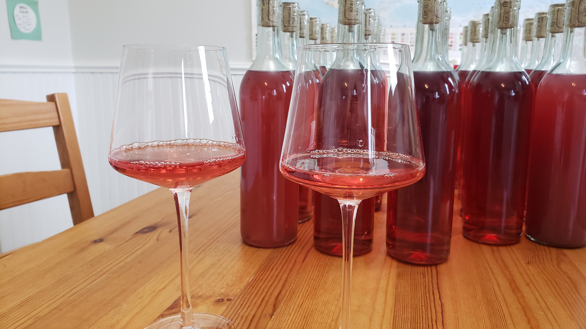

<main class="page">

    <section class="content-card">

        <h1 class="page-title">Hubby Dan's Meadery-Eatery</h1>

        <div class="image-gallery">
            
            
        </div>

        <h2 class="section-title">Welcome!</h2>
        <p class="section-text">We are so happy that you took the time to check out our establishment</p>

        <h2 class="section-title">Our Mission</h2>
        <p class="section-text">At Hubby Dan's Meadery-Eatery you will experience all the delights that the bees of Nova Scotia have to offer.</p>
        <p class="section-text">Our goal is to help you experience one of humanities earliets discoveries: Mead!</p> 
        <p class="section-text">Oh yes, perhaps even before fire itself was harnessed, it is said that the Gods (cool ones, not these new guys) taught us humans how to enjoy life and forget the stresses of the lurking bengal tigers by drinking away our fear with the advent of fermentation!</p>
        <p class="section-text">Eons later, here you find us, still perfecting the craft of mead making while paring this most magical drink with the best accompanying food.</p>
        <p class="section-text">So call us, reserve a table (they go away quickly!) and come sit with us; find your connection with the first humans who discovered how happy honey, some water and time can make you!</p>

    </section>
</main>